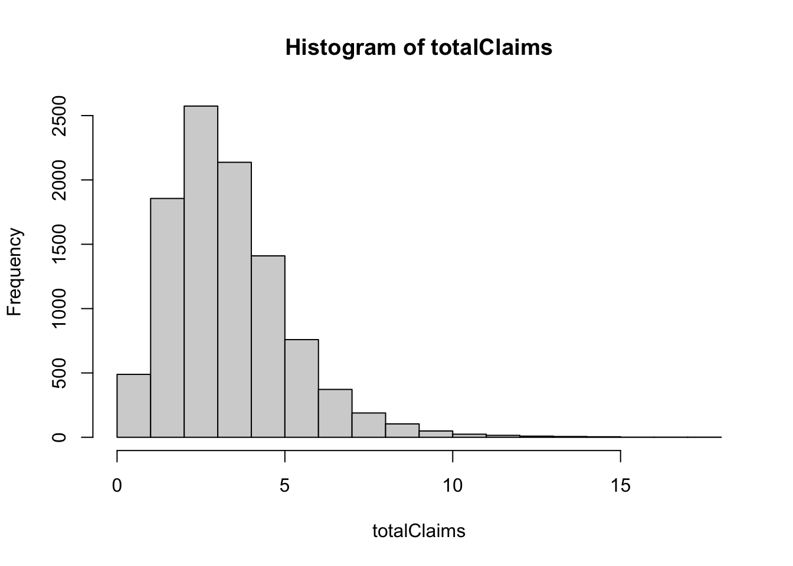

Chapter 4 Collective Risk Model
Mathematical models of the total amount of claims from a portfolio of policies over a short period of time will be presented in this chapter. The models are referred to as short term risk models. Two main sources of uncertainty including the claim numbers and claim sizes will be taken into consideration. We will begin with the model for aggregate (total) claims or collective risk models.
We define the following random variables:
\(S\) denotes total amount of claims from a portfolio of policies in a fixed time interval, for e.g. one year,
\(N\) represents the number of claims, and
\(X_i\) denotes the amount of the \(i\)th claim.
Then the total claims \(S\) is given by \[S = X_1 + \ldots + X_N.\]
The following assumptions are made for deriving the collective risk model:
\(\{X_i \}_{i=1}^\infty\) are independent and identically distributed with distribution function \(F_X\).
\(N\) is independent of \(\{X_i \}_{i=1}^\infty\).
The distribution of the total claim \(S\) is said to be a compound distribution. The properties of the compound distribution will be given in the Section 2.
Note The distribution of \(S\) can be derived by using convolution technique. In general, the closed form expressions for the compound distribution do not exist so we will mainly concern with the moments of \(S\). For more details about convolution, see Gray and Pitts (2012).
4.1 Conditional expectation and variance formulas
Some useful properties of conditional expectation and conditional variance are given. The conditional expectaion formula is
\[E[ E[X|Y ]] = E[X].\] The conditional variance of \(X\) given \(Y\) is defined to be \[\begin{split} Var[X|Y] &= Var[Z] \text{ where } Z = X|Y \\ &= E[(Z - E[Z])^2] = E[Z^2] - (E[Z])^2 \\ &= E[(X - E[X|Y])^2 | Y] \\ &= E[X^2| Y] - (E[X|Y])^2. \\ \end{split}\] The conditional variance formula is \[\begin{equation} \tag{4.1} Var[X] = E[ Var[X|Y ]] + Var[E[X|Y ]]. \end{equation}\]
Example 4.1 Show that \[Var[X] = E[ Var[X|Y ]] + Var[E[X|Y ]].\]
Solution:
Consider the terms on the right-hand side of (4.1). We have
\[\begin{aligned} E[Var[X|Y]] &= E\left[ E[X^2|Y] - (E[X|Y])^2 \right] \\ &= E[X^2] - E\left[(E[X|Y])^2 \right], \end{aligned}\] and \[\begin{aligned} Var[E[X|Y ]] &= Var[Z] \text{ where } Z = E[X|Y ] \\ &= E[(E[X|Y ])^2] - (E[E[X|Y ]])^2 \\ &= E[(E[X|Y ])^2] - (E[X])^2 \\ \end{aligned}\] Adding both terms gives the required result.
Example 4.2 In three coloured boxes - Red, Green and Blue, each box has two bags. The bags of Red box contain 1 and 2 (in units of THB) respectively, those of Green box contain 1 and 5, and those of Blue contain 1 and 10 . A box is chosen at random in such a way that \(\Pr(\text{Red}) = \Pr(\text{Green}) = \Pr(\text{Blue}) = 1/3\). A fair coin is tossed to determined which bag to be chosen from the chosen box. Let \(X\) be the value of the contents of the chosen bag.
Find the distribution of \(X\).
Find \(E[X]\) and \(Var[X]\).
Use the conditional expectation and conditional variance formulas to verify your results.
Solution: 1. The distribution of \(X\) can be obtained by using the law of total probability: for example \[\begin{aligned} P(X= 1) &= P(X = 1 , R) + P(X = 1 , G) + P(X = 1 , B) \\ &= P(X = 1 | R) \cdot P(R) + P(X = 1 | G) \cdot P(G) + P(X = 1 | B) \cdot P(B) \\ &= \frac{1}{2} \cdot \frac{1}{3} + \frac{1}{2} \cdot \frac{1}{3} + \frac{1}{2} \cdot \frac{1}{3} = \frac{1}{2}. \end{aligned}\] Similarly, we have \[P(X = 1 ) = \frac{1}{2}, \quad P(X = 2 ) = P(X = 5 ) = P(X = 10 ) = \frac{1}{6}.\]
It follows that \[E[X] = \frac{10}{3}, \quad Var[X] = \frac{98}{9}.\]
We first calculate \[\begin{aligned} E[X|R] &= \frac{1}{2}\cdot(1 + 2) = \frac{3}{2} \\ E[X|G] &= \frac{1}{2}\cdot(1 + 5) = 3 \\ E[X|B] &= \frac{1}{2}\cdot(1 + 10) = \frac{11}{2}. \\ \end{aligned}\] We have \[\begin{aligned} E[X] &= E[X | R] \cdot P(R) + E[X | G] \cdot P(G) + E[X | B] \cdot P(B) \\ &= \frac{1}{3}\cdot(\frac{3}{2} + 3 + \frac{11}{2}) = \frac{10}{3}. \end{aligned}\]
4.2 The moments of a compound distribution \(S\)
The moments and moment generating function of \(S\) can be easily derived from the conditional expectation formula.
4.2.1 The mean of \(S\)
Let \(m_k\) be the \(k\)th moment of \(X_1\), i.e. \(E[X_1^k] = m_k\). Conditional on \(N = n\), we have \[E[S | N = n] = E[ \sum_{i=1}^n X_i] = \sum_{i=1}^n E[ X_i] = n E[ X_i] = n \cdot m_1.\] Hence, \(E[S | N] = N m_1\) and \[E[S] = E[E[S | N]] = E[N m_1] = E[N] m_1 = E[N] \cdot E[X_1].\] It is no surprise that the mean of the total claims is the product of the means of the number of claims and the mean of claim sizes.
4.2.2 The variance of \(S\)
Using the fact that \(\{X_i \}_{i=1}^\infty\) are independent, we have \[Var[S | N = n] = Var[ \sum_{i=1}^n X_i] = \sum_{i=1}^n Var[ X_i] = n Var[ X_i] =n (m_2 - m_1^2),\] and \(Var[S | N] = N (m_2 - m_1^2).\) It follows that \[\begin{aligned} Var[S] &= E[ Var[S | N] ] + Var[ E[S | N] ] \\ &= E[ N (m_2 - m_1^2) ] + Var[ N m_1 ] \\ &= E[ N ] (m_2 - m_1^2) + Var[ N ] m_1 ^2. \end{aligned}\]
Example 4.3 Show that \(M_S(t) = M_N(\log(M_X(t)))\).
Solution:
First, consider the following conditional expectation: \[\begin{aligned} E\left [e^{t S} | N = n \right] &= E\left[e^{t (X_1 + X_2 + \cdots X_n)}\right] \\ &= E\left[e^{t X_1}\right] \cdot E\left[e^{t X_2}\right] \cdots E\left[e^{t X_n}\right] \text{, since } X_1, X_2 \ldots, X_n \text{ are independent} \\ &= (M_X(t))^n.\end{aligned}\] Hence \(E \left [e^{t S} | N \right] = (M_X(t))^N.\)
From the definition of the moment generating function, \[\begin{aligned} M_S(t) &= E[e^{t S}] \\ &= E \left[ E[e^{t S} | N] \right ] \\ &= E \left[ (M_X(t))^N \right ]\\ &= E \left[ Exp( N \cdot \log (M_X(t) ) \right] \\ &= M_N(\log(M_X(t))) (\text{ since } M_X(t) = E[e^{tX}] ).\end{aligned}\]
4.3 Special compound distributions
4.3.1 Compound Poisson distributions
Let \(N\) be a Poisson distribution with the parameter \(\lambda\), i.e. \(N \sim Poisson(\lambda)\) and \(\{X_i \}_{i=1}^\infty\) are independent and identically distributed with distribution function \(F_X\). Then \(S = X_1 + \ldots + X_N\) is said to have a compound Poisson distribution and denote by \(\mathcal{CP}(\lambda,F_X)\).
Note The same terminology can be defined similarly for other distributions, for e.g. if \(N\) has a negative binomial distribution, then \(S\) is said to have a compound negative binomial distribution.
Example 4.4 Let \(S \sim \mathcal{CP}(\lambda,F_X)\). Show that
\(E[S] = \lambda m_1\),
\(Var[S] = \lambda m_2\),
\(M_S(t) = Exp{(\lambda(M_X(t) - 1))}.\)
The third central moment \(E[(S- E[S])^3] = \lambda m_3\), and hence \[Sk[S] = \frac{\lambda m_3}{(\lambda m_2)^{3/2}},\]
where \(m_k\) be the \(k\)th moment of \(X_1\)
Solution: 1. \(E[S] = E[N] \cdot E[X] = \lambda m_1\),
\(Var[S] = E[ N ] (m_2 - m_1^2) + Var[ N ] m_1 ^2 = \lambda(m_2 - m_1^2) + \lambda m_1^2 = \lambda m_2\),
From \[\begin{aligned} M_S(t) &= M_N(\log(M_X(t))) \\ &= Exp\left( \lambda \left( e^{\log(M_X(t))} - 1 \right) \right), \text{ since } M_N(t) = Exp(\lambda(e^t - 1)) \\ &= Exp{(\lambda(M_X(t) - 1))}. \end{aligned}\]
The third central moment \(E[(S- E[S])^3] = \lambda m_3\), and hence \[Sk[S] = \frac{\lambda m_3}{(\lambda m_2)^{3/2}}.\] In particular, we have \[\begin{aligned} E[(N- E[N])^3] &= E\left [ N^3 - 3 N^2 \cdot E[N] + 3 N \cdot (E[N])^2 - (E[N])^3 \right] \\ &= E[N^3] - 3 E[N^2] \cdot E[N] + 2 (E[N])^3 \\ &= M_N'''(0) - 3 M_N''(0) \cdot M_N'(0) + 2 (M_N'(0))^3\end{aligned}\]
For \(N \sim Poisson(\lambda)\), \(M_N(t) = Exp(\lambda(e^t - 1)).\) By differentiating \(M_N(t)\) and evaluating at \(t = 0\), we can show that \[M'(0) = \lambda, \quad M''(0) = \lambda (1 + \lambda), \quad M'''(0) = \lambda (1 + 3\lambda + \lambda^2).\] Hence, \(E[(N- E[N])^3] = \lambda.\)
Similarly,
\[\begin{aligned} E[(S- E[S])^3] &= E[S^3] - 3 E[S^2] \cdot E[S] + 2 (E[S])^3 \\ \end{aligned}\] In addition, \(M_S(t) = Exp{(\lambda(M_X(t) - 1))}.\) By differentiating \(M_S(t)\) we can show that \[\begin{aligned} M'''_S(t) &= \lambda M'''_X(t) M_S(t) + 2 \lambda M''_X(t) M'_S(t) + \lambda M'_X(t) M''_S(t).\\ \end{aligned}\] Evaluating \(M'''_S(t)\) at \(t = 0\) results in \[\begin{aligned} M'''_S(0) &= E[S^3] = \lambda m_3 + 3 E[S] \cdot E[S^2] - 2( E[S])^3,\end{aligned}\] which gives \[\begin{aligned} E[(S- E[S])^3] &= E[S^3] - 3 E[S^2] \cdot E[S] + 2 (E[S])^3 \\ &= \lambda m_3.\end{aligned}\]
Example 4.5 Let \(S\) be the aggregate annual claims for a risk where \(S \sim \mathcal{CP}(10,F_X)\) and the individual claim amounts have a \(Pa(4,1)\) distribution. Calculate \(E[S], Var[S]\) and \(Sk[S]\).
Solution:
Since \(X \sim Pa(4,1)\) with \(\alpha = 4\) and \(\lambda = 1\), we
have \[\begin{aligned}
E[X^r] &= \frac{\Gamma(\alpha - r) \cdot \Gamma(1 + r) \cdot \lambda^r }{\Gamma(\alpha)}\\
E[X] &= \frac{\lambda}{\alpha - 1} = \frac{1}{4-1} = \frac{1}{3}\\
E[X^2] &= \frac{\Gamma(2) \cdot \Gamma(3) \cdot \lambda^2 }{\Gamma(4)} = \frac{1}{3}\\
E[X^3] &= \frac{\Gamma(1) \cdot \Gamma(4) \cdot \lambda^3 }{\Gamma(4)} = 1.\\ \end{aligned}\]
We have \[\begin{aligned}
E[S] &= \lambda E[X] = \frac{10}{3} \\
Var[S] &= \lambda E[X^2] = \frac{10}{3} \\
Sk[S] &= \frac{\lambda E[X^3]}{\left(\lambda E[X^2]\right)^{3/2}} = \frac{10}{(10/3)^{3/2}} = 1.6432.\\ \end{aligned}\]
In what follows, we will use R to simulate \(n\) observations from a compound Poisson distribution, where the Poisson parameter is \(\lambda\) and where the claims are exponentially distributed with mean \(\mu\), i.e. \(CP(\lambda, Exp(1/\mu))\)
# Simulation n observations from a CP(lambda,FX) distribution
# Assumptions:
# N ~ Poisson(lambad)
# X ~ Pa(alpha,beta)
library(actuar)
n <- 10000
lambda <- 10
alpha <- 4
beta <- 1
totalClaims <- rep(0,n)
numclaims <- rpois(n,lambda)
for (i in 1:n)
totalClaims[i] <- sum(rpareto(numclaims[i], shape =alpha, scale = beta))
hist(totalClaims)
mean(totalClaims)## [1] 3.338976var(totalClaims)## [1] 3.29011library(moments)
skewness(totalClaims)## [1] 1.345385Note An important property of independent, but not necessarily identically distributed, compound Poisson random variables is that the sum of a fixed number of them is also a compound Poisson random variable.
Example 4.6 Let \(S_1, \ldots, S_n\) be independent compound Poisson random variables, with parameters \(\lambda_i\) and \(F_i\). Then \(S = \sum_{i=1}^n S_i\) has a compound distribution with parameter \[\lambda = \sum_{i=1}^n \lambda_i,\] and \[F = \frac{1}{\lambda}\sum_{i=1}^n \lambda_i F_i.\]
Solution: Exercise.
Note The compound Poisson distribution is the most often used in practice. It possesses the additivity of independent compound Poisson distributions (as shown in Example 4.6, and the expressions of the first three moments are very simple.
4.3.2 Compound negative binomial distributions
A useful discrete random variable that can be used for modelling the distributions of claim numbers is a negative binomial distribution. A random variable \(N\) has a negative distribution with parameters \(k\) and \(p\), denoted by \(N \sim NB(k,p)\) if its probability mass function is given by \[f_N(n) = \Pr(N = n) = \frac{\Gamma(k+n)}{\Gamma(n+1)\Gamma(k)} p^k (1- p)^n \quad n = 0,1,2,\ldots.\] It can be interpreted as the probability of getting \(n\) failures before the \(k\)th success occurs in a sequence of independent Bernoulli trials with probability of success \(p\).
Example 4.7 Let \(N \sim NB(k,p)\). Show that the mean, variance and moment generating function of the compound negative binomial distribution, denoted by \(\mathcal{CNB}(k,p,F_X)\), are as follows:
\(E[S] = \frac{k q}{p} m_1\),
\(Var[S] = \frac{k q}{p^2} (p m_2 + q m_1^2)\),
\(M_S(t) = \left( \frac{ p }{ 1 - q M_X(t) } \right)^k,\)
where \(m_k\) be the \(k\)th moment of \(X_1\) and \(q = 1-p\).
Solution: The results follows from the properties of the negative binomial distribution \(N \sim NB(k,p)\): \[E[N] = \frac{kq}{p}, \quad Var[N] = \frac{kq}{p^2},\] and the moments of a compound distribution \(S\) derived in Section 4.2.
Notes 1. The negative binomial distribution is an alternative to the Poisson distribution for \(N\), in the sense that it allows for any value of \(N = 0, 1, 2, \ldots\), unlike the binomial distribution which has an upper limit.
One advantage that the negative binomial distribution has over the Poisson distribution is that its variance exceeds its mean. These two quantities are equal for the Poisson distribution.
Thus, the negative binomial distribution may give a better fit to a data set which has a sample variance in excess of the sample mean.
- The compound negative binomial distribution is an appropriate to model the heterogeneity of the numbers of claims occurring for different risks. In particular, suppose that for each policy, the number of claims in a year has a Poisson distribution \(N | \lambda \sim Poisson(\lambda)\), and that the variation in \(\lambda\) across the portfolio can be modelled using a Gamma distribution \(\mathcal{G}(\alpha, \lambda)\). Then the number of claims in the year for a policy chosen at random from the portfolio has a negative binomial distribution.
4.3.2.1 Misture distributions
Suppose we model a policyholder’s claim number \(N\) using a conditional distribution \(N | \lambda\), where \(\lambda\) can be thought of as a “risk parameter” for that policyholder.
Policyholders represent a variety of risks and have different risk parameters, and we model the variation across policyholders by regarding the various \(\lambda\)s as being independent realisations of a random variable with known probability distribution. This gives the joint density, which we can write as \(f_{N,\lambda}(k, \lambda) = f_\lambda(\lambda) f_{N|\lambda}(k | \lambda)\).
This enables us to allow for variability in the risks across a portfolio; that is, to model the heterogeneity of the numbers of claims occurring for different risks.
Example 4.8 A portfolio consists of a large number of individual policies. For each policy, the number of claims in a year has a poisson distribution \(N | \lambda \sim Poisson(\lambda)\). Let us suppose that the variation in \(\lambda\) across the portfolio of risks can be modelled using a gamma \(\mathcal{G}(\alpha,\beta)\) distribution with known parameters, and let us use this to average across the risks.
We are considering a mixture of Poissons where the mixing distribution if gamma. This is also known as a mixture distribution. Derive the probability mass function of the mixture distribution.
Solution:
For \(k = 0,1,2,\ldots\), we have
\[ \begin{aligned} \Pr(N = k) &= \int f_\lambda(\lambda) \Pr(N = k | \lambda) \, d\lambda \\ &= \int_{0}^\infty \frac{\beta^\alpha}{\Gamma(\alpha)} \lambda^{\alpha -1} e^{\beta \lambda} e^{-\lambda} \frac{\lambda^k}{k!} \, d\lambda \\ &= \frac{\Gamma(\alpha + k)}{\Gamma(\alpha) \Gamma(1 + k)} \frac{\beta^\alpha}{(\beta+1)^{\alpha+k}} \times \int_0^\infty h(\lambda) \, d\lambda \end{aligned} \] where \(h(\lambda)\) is the probability density function of \(\lambda \sim \mathcal{G}(\alpha + k, \beta + 1)\).
Hence,
\[ \Pr(N =k) = \frac{\Gamma(\alpha + k)}{\Gamma(\alpha) \Gamma(1 + k)} \left(\frac{\beta}{\beta+1}\right)^\alpha \left(\frac{1}{\beta+1}\right)^k, k = 0,1,2,\ldots,\]
which is the probability mass function of a \(\mathcal{NB}(\alpha, \beta/(\beta + 1))\) distribution.
This provides an illuminating view of the negative binomial distribution – it arises as a mixture of Poissons where the mixing distribution is gamma.
4.3.2.2 an Example in R
This R Markdown introduces the concept of mixture distributions which applies to models for claim numbers.
Suppose we model a policyholder’s claim numbers \(N\) using a conditional distribution \(N | \lambda\), where \(\lambda\) can be thought of as a risk parameter for that policyholder. Policyholders represent a variety of risks and have different risk parameters, and we model the variation across policyholders by regarding the various \(\lambda\)s as being independent realisations of a random variable with known probability distribution.
The following R code produces the required \(n\) simulated values from this mixture distribution, where \(N | \lambda \sim Poisson(\lambda)\) with mixing distribution \(\mathcal{G}(\alpha, \beta)\), i.e. \(\lambda \sim \mathcal{G}(\alpha, \beta)\).
4.3.3 Compound binomial distributions
A compound binomial distribution can be used to model a portfolio of policies, each of which can give rise to at most one claim.
Example 4.9 Consider a portfolio of \(n\) independent and identical policies where there is at most one claim on each policy in a year (for e.g. life insurance). Let \(p\) be the probability that a claim occurs. Explain that the aggregate sum \(S\) in this portfolio has a compound binomial distribution, denoted by \(\mathcal{CB}(n,p,F_X)\). Derive the mean, variance and moment generating function of \(S\).
Solution: Since \(n\) policies (lives) are independent with the probability \(p\) that a claim occurs, the number \(N\) of claims on the portfolio in one year has a binomial distribution i.e. \(N \sim \text{bi}(n,p)\). If the sizes of the claims are i.i.d. random variables, independent of \(N\), then the total amount \(S\) claimed on this policy in one year has a compound binomial distribution.
The mean, variance and the moment generating function of \(S\) are as follows: \[\begin{aligned} E[S] &= n p m_1, \\ Var[S] &= np m_2 - n p^2 m_1^2, \\ M_S(t) &= \left( q + p M_X(t) \right)^n,\end{aligned}\] where \(m_k\) be the \(k\)th moment of \(X_1\) and \(q = 1-p\).
4.4 The effect of reinsurance
The effect of reinsurance arrangements on an aggregate claims distribution will be presented. Let \(S\) denotes the total aggregate claims from a risk in a given time, \(S_I\) and \(S_R\) denote the insurance and reinsurance aggregate claims, respectively. It follows that \[S = S_I + S_R.\]
4.4.1 Proportional reinsurance
Recall that under proportional reinsurance arrangement, a fixed proportion \(\alpha\) is paid by the direct insurer and the remainder of the claim is paid by the reinsurer. It follows that \[S_I = \sum_{i= 1}^N \alpha X_i = \alpha S\] and \[S_R = \sum_{i= 1}^N (1- \alpha) X_i = (1- \alpha) S,\] where \(X_i\) is the amount of the \(i\)th claim.
Notes
Both direct insurer and the reinsurer are involved in paying each claim.
Both have unlimited liability unless a cap on the claim amount is arranged.
Example 4.10 Aggregate claims from a risk in a given time have a compound Poisson distribution with Poisson parameter \(\lambda = 10\) and an individual claim amount distribution that is a Pareto distribution, \(Pa(4,1)\). The insurer has effected proportional reinsurance with proportion retained \(\alpha = 0.8\).
Find the distribution of \(S_I\) and \(S_R\) and their means and variances.
Compare the variances \(Var[S_I] +Var[S_R]\) and \(Var[S]\). Comment on the results obtained.
Solution: 1. We have \[\begin{aligned} S_I &= \sum_{i=1}^N \left( \alpha X_i \right) = \alpha \sum_{i=1}^N X_i = \alpha \cdot S, \\ S_R &= \sum_{i=1}^N \left( (1- \alpha) X_i \right) = (1- \alpha) \sum_{i=1}^N X_i = (1- \alpha) \cdot S,\end{aligned}\] since both insurer and reinsurer are involved in paying each claim, i.e. \(Y_i = \alpha X_i\) and \(Z_i = (1- \alpha) X_i\). It follows that \(S_I \sim \mathcal{CP}(10,F_Y)\) and \(S_R \sim \mathcal{CP}(10,F_Z)\).
As we can show that if \(X \sim Pa(\beta,\lambda)\), then \(W = k X \sim Pa(\beta,k \lambda)\). For \(X \sim Pa(4,1)\) with \(\beta = 4\) and \(\lambda = 1\), we have \(Y_i \sim Pa(\beta, \alpha \cdot \lambda) = Pa(4, 0.8)\) and \[\begin{aligned} E[S_I] &= 10 \cdot E[Y_i] = 10 \cdot \frac{\alpha \cdot \lambda}{\beta - 1} \\ & = \frac{8}{3}, \\ Var[S_I] &=10 \cdot E[Y_i^2] = 10 \cdot \frac{\Gamma(\beta - 2) \cdot \Gamma(1 + 2) \cdot (\alpha \cdot \lambda)^2 }{\Gamma(\beta)} \\ &= 10 \cdot \frac{\Gamma(2) \cdot \Gamma(3) \cdot (\alpha \cdot \lambda)^2 }{\Gamma(4)} = 10 \cdot \frac{2!}{3!} \cdot (0.8)^2 \\ &= \frac{32}{15} \end{aligned}\]
Alternatively, we can calculate by using the properties of the expectation and variance as follows: \[\begin{aligned} E[S_I] &= E[\alpha S] = \alpha\cdot E[S] = \alpha\cdot \lambda \cdot E[X] = 10 \cdot 0.8 \cdot \frac{1}{3} = \frac{8}{3}, \\ Var[S_I] &= Var[\alpha S] = \alpha^2 \cdot Var[S] \\ &= \alpha^2 \cdot \lambda \cdot E[X^2] = \frac{32}{15} .\end{aligned}\]
Similarly, \[\begin{aligned} E[S_R] &= E[(1 - \alpha) S] = (1 - \alpha)\cdot E[S] = \frac{2}{3}, \\ Var[S_R] &= Var[(1 - \alpha) S] = (1 - \alpha)^2 \cdot Var[S] = \frac{2}{15} .\end{aligned}\] Note that \(E[S_I] + E[S_R] = E[S]\), while \(Var[S_I] + Var[S_R] = \frac{34}{15} < Var[S] = \frac{10}{3}.\)
4.4.2 Excess of loss reinsurance
Recall that under excess of loss reinsurance arrangement, the direct insurer has effected excess of loss reinsurance with retention level \(M >0\). For a claim \(X\),
the insurance company pays any claim in full if \(X \le M\); and
the reinsurer (or reinsurance company) pays the remaining amount of \(X - M\) if \(X > M\).
It follows that
\[\begin{equation} \tag{4.2} S_I = \sum_{i= 1}^N Y_1 + Y_2 + \ldots + Y_N = \sum_{i= 1}^N \min(X_i,M) \end{equation}\] and \[\begin{equation} \tag{4.3} S_R = \sum_{i= 1}^N Z_1 + Z_2 + \ldots + Z_N = \sum_{i= 1}^N \max(0,X_i - M), \end{equation}\] where \(X_i\) is the amount of the \(i\)th claim. When \(N = 0\), we set \(S_I = 0\) and \(S_R = 0\).
Note \(S_R\) can equal 0 even if \(N > 0\). This occurs when all claims do not exceed \(M\) and hence the insurer pays the full amounts of claims.
As discussed in the previous section, the reinsurer is involved only claims which exceed the retention limit (a claim such that \(X > M\)). Such claims are called reinsurance claims. Taking in account of counting only non-zero claims, we can rewrite \(S_R\) as follows. Let \(N_R\) be the number of insurance (non-zero) claims for the reinsurer and \(W_i\) be the amount of the \(i\)th non-zero payment by the reinsurer. The aggregate claim amount paid by the reinsurer can be written as \[S_R = \sum_{i= 1}^{N_R} W_i.\]
Example 4.11 By using the probability generating function, show that if \(N \sim Poisson(\lambda)\), then the distribution \(N_R \sim Poisson(\lambda \pi_M)\) where \(\pi_M = \Pr(X_j > M)\).
Solution: Define the indicator random variable \(\{I_j\}_{j=1}^\infty\), where \[\begin{aligned} I_j = \begin{cases} 1 &\text{if } X_j > M\\ 0 &\text{if } X_j \le M. \end{cases}\end{aligned}\] Therefore, \[N_R = \sum_{j= 1}^{N} I_j.\] The variable \(N_R\) has a compound distribution with its probability generating function \[P_{N_R}(r) = P_N[P_I(r)],\] where \(P_I\) is the probability generating function of the indicator random variable. It can be shown that \[P_I(r) = 1 - \pi_M + \pi_M r,\] where \(\pi_M = \Pr(I_j = 1) = \Pr(X_j > M) = 1 - F(M)\).
Note In the above example, one can derive the distribution of \(N_R\) by using the moment generating function: \[M_{N_R}(t) = M_N(\log M_I(t)),\] where \(M_N\) and \(M_I\) are the moment generating functions of \(N\) and \(I\). Note also that \[M_I(t) = 1 - \pi_M + \pi_M Exp(t).\]
4.4.3 Compound Poisson distributions under excess of loss reinsurance
Assume that aggregate claim amount \(S \sim \mathcal{CP}(\lambda,F_X)\) has a compound Poisson distribution. Under excess of loss reinsurance with retention level \(M\), it follows from (4.2) and (4.3) that
\(S_I \sim \mathcal{CP}(\lambda,F_Y),\)
where \(f_Y(x) = f_X(x)\) for \(0 < x < M\) and \(\Pr(Y = M) = 1 - F_X(M)\).
\(S_R \sim \mathcal{CP}(\lambda,F_Z),\)
where \(F_Z(0) = F_X(M)\) and \(f_Z(x) = f_X(x+M), x > 0\).
Excluding zero claims, \(S_R \sim \mathcal{CP}(\lambda \,( 1 - F_X(M)) , F_W),\)
where \(f_W(x) = \displaystyle{\frac{f_X(x+M)}{1- F_X(M)}}, x > 0\).
Example 4.12 Suppose that \(S\) has a compound Poisson distribution with Poisson parameters \(\lambda = 10\) and the claim sizes have the following distribution
| \(x\) | 1 | 2 | 5 | 10 |
|---|---|---|---|---|
| \(\Pr(X = x)\) | 0.4 | 0.3 | 0.2 | 0.1 |
The insurer enters into an excess of loss reinsurance contract with retention level \(M = 4\).
Show that \(S_I \sim\mathcal{CP}(\lambda,F_Y)\).
Show that \(S_R \sim\mathcal{CP}(\lambda,F_Z)\).
By excluding zero claims, show that the \(S_R\) can also be expressed as \(S_R \sim \mathcal{CP}(\lambda \, p,F_W)\) where \(p = \Pr(X > M)\).
Find the mean and variance of the aggregate claim amount for both insurer and reinsurer.
Solution:
- Recall that \(S_I = \sum_{i=1}^N \min\{X_i,4\}.\) The number of claim remains the same, and hence \(N \sim Poisson(10)\). The distribution of claim amount paid by the insurer, \(F_Y(x)\) is given by
| \(x\) | 1 | 2 | 4 |
|---|---|---|---|
| \(\Pr(Y = x)\) | 0.4 | 0.3 | 0.3 |
Therefore, \(S_I \sim \mathcal{CP}(10,F_Y)\) and
\[\begin{aligned} \mathrm{E}[S_I] &= 10 E[Y] = 10(1(0.4) + 2(0.3) + 4(0.3)) = 22, \\ \mathrm{Var}[S_I] &= 10 E[Y] = 10(1^2(0.4) + 2^2(0.3) + 4^2(0.3)) = 64. \end{aligned}\]
- We have \(S_R = \sum_{i=1}^N \max\{0, X_i - 4\}.\) When zero claims are included, \(N_R = N \sim Poisson(10)\). The distribution of claim amount paid by the reinsurer, \(F_Z(x)\) is given by
| \(x\) | 0 | 1 | 6 |
|---|---|---|---|
| \(\Pr(Z = x)\) | 0.7 | 0.2 | 0.1 |
Therefore, \(S_R \sim \mathcal{CP}(10,F_Z)\) and
\[\begin{aligned} \mathrm{E}[S_R] &= 10 E[Z] = 8, \\ \mathrm{Var}[S_R] &= 10 E[Z^2] = 38. \end{aligned}\]
Notes
\(\mathrm{E}[S] = 10 \mathrm{E}[X] = 30\) and \(\mathrm{Var}[S]= 10 \mathrm{E}[X^2] = 166.\)
\(\mathrm{E}[S_I + S_R] = \mathrm{E}[S]\), and \[\mathrm{Var}[S_I + S_R] = 64 + 38 < 166 = \mathrm{Var}[S].\]
- Consider the reinsurer’s position when zero claims are excluded. We define \[ W = Z | Z >0 = X - 4 | X > 4.\] We first compute \(\pi_M\), the proportion of claims which involve the reinsurer, from \[ \pi_M = \mathrm{Pr}(X>4) = \mathrm{Pr}(X = 5) + \mathrm{Pr}(X = 10) = 0.3.\] Recall that \(S_R = \sum_{i=1}^{N_R} W_i.\) We have \(S_R \sim \mathcal{CP}(0.3 \times 10, F_W)\) and the distribution of \(W, F_W(x)\) is given by
\[ \begin{aligned} \mathrm{Pr}(W = 1) &= \mathrm{Pr}(X = 5 | X > 4) = \frac{ \mathrm{Pr}(X = 5 , X > 4) }{\mathrm{Pr}(X > 4)} = \frac{ \mathrm{Pr}(X = 5) }{\mathrm{Pr}(X > 4)} = \frac{2}{3} \\ \mathrm{Pr}(W = 6) &= 1- \mathrm{Pr}(W = 1) = \frac{1}{3}. \end{aligned} \] Hence, \[ \begin{aligned} \mathrm{E}[S_R] &= (10 \times 0.3)(1(2/3) + 6(1/3)) = 8, \\ \mathrm{Var}[S_R] &= (10 \times 0.3)(1^2(2/3) + 6^2(1/3)) = 38. \end{aligned} \]
Example 4.13 Suppose that \(S\) has a compound Poisson distribution with Poisson parameters \(\lambda = 40\) and the claim sizes have a Pareto distribution \(Pa(3,4)\). The insurer has an excess of loss reinsurance contract in place with retention level \(M = 2\). Find the mean and variance of the aggregate claim amount for both insurer and reinsurer.
Solution: 1. Zero claims included. Recall that that for \(X \sim \mathcal{Pa}(\alpha,\lambda)\), its density function is \[ f_X(x) = \frac{\alpha \lambda^\alpha}{ (x + \lambda)^{\alpha + 1}}.\] We know that \(S_R \sim \mathcal{CP}(40,F_Z)\). Moreover,
\[ \begin{aligned} \mathrm{E}[Z] &= 0 F_Z(0) + \int_0^\infty x f_Z(x)\, dx \\ &= \int_0^\infty x f_X(x + M)\, dx \\ &= \int_0^\infty \frac{x \cdot 3 \cdot 4^3}{(x + 2 + 4)^{3+1}} \, dx\\ &= \frac{4^3}{6^3} \int_0^\infty \frac{x \cdot 3 \cdot 6^3}{(x + 6)^{3+1}} \, dx \\ &= \frac{4^3}{6^3} \frac{6}{3-1} = 0.88\ldots .\\ \end{aligned} \] Note that the last integral above is the mean of \(\mathcal{Pa}(3,6)\), which is equal to \(6/(3-1)\).
For \(\mathrm{E}[Z^2]\), we proceed as follows: \[ \begin{aligned} \mathrm{E}[Z^2] &= 0^2 F_Z(0) + \int_0^\infty x^2 f_Z(x)\, dx \\ &= \int_0^\infty x^2 f_X(x + M)\, dx \\ &= \int_0^\infty \frac{x^2 \cdot 3 \cdot 4^3}{(x + 2 + 4)^{3+1}} \, dx\\ &= \frac{4^3}{6^3} \int_0^\infty \frac{x^2 \cdot 3 \cdot 6^3}{(x + 6)^{3+1}} \, dx \\ &= \frac{4^3}{6^3} 6^2 = 10.66\ldots .\\ \end{aligned} \] Note that the last integral above is the second moment about the origin of \(\mathcal{Pa}(3,6)\), which is equal to \([6^2 \cdot\Gamma(3-2)\Gamma(1+2)] /\Gamma(3) = 6^2\).
Therefore, \[\begin{aligned} \mathrm{E}[S_R] &= \lambda E[Z] = 320/9, \\ \mathrm{Var}[S_R] &= \lambda E[Z^2] = 1280/3. \end{aligned}\]
- Zero claims excluded We define \[ W = Z | Z >0 = X - M | X > M.\]
\[ \begin{aligned} \mathrm{E}[W] &= \int_0^\infty x f_W(x)\, dx \\ &= \int_0^\infty \frac{x f_X(x + 2)}{(1 - F_X(2))} \, dx \\ &= \frac{1}{(1 - F_X(2))} \int_0^\infty x f_X(x + 2) \, dx \\ &= \frac{1}{(1 - F_X(2))}\cdot \mathrm{E}[Z]. \end{aligned} \] It follows that \[ \mathrm{E}[S_R] = \lambda\cdot \mathrm{Pr}(X > M) \cdot \mathrm{E}[W] = 40 ( 1 - F_X(2)) \mathrm{E}[W] = 40\mathrm{E}[Z] = 320/9.\] Similarly, one can show that \[ \begin{aligned} \mathrm{E}[W^2] &= \int_0^\infty x^2 f_W(x)\, dx \\ &= \frac{1}{(1 - F_X(2))}\cdot \mathrm{E}[Z^2]. \end{aligned} \] This results in \[\mathrm{Var}[S_R] = \lambda \cdot \mathrm{Pr}(X > M) \cdot \mathrm{E}[W^2] = 40 ( 1 - F_X(2)) \mathrm{E}[W^2] = 40\mathrm{E}[Z^2] = 1280/3.\]
- Note that \(S = S_I + S_R\) and
\[ \mathrm{E}[S] = \lambda \mathrm{E}[X] = 40 \frac{4}{3-1} = 80. \]
Therefore,
\[ \mathrm{E}[S_I] = 80 - \frac{320}{9} = \frac{400}{9}. \]
4.5 Approximation of the collective risk model
4.5.1 The normal approximation
According to the Central Limit Theorem, if the mean number of claims is large, then the distribution of aggregate claims \(S\) can be approximated by a normal distribution, i.e. \(S \sim \mathcal{N}(\mathrm{E}[S], \mathrm{Var}[S])\).
Notes
The normal approximation may not provide a good approximation to the distribution of \(S\) because the true distribution of \(S\) is skew. However, the normal approximation is symmetric.
The normal approximation is likely to underestimate tail probabilities which are the most interest quantities of insurers.
Example 4.14 Aggregate claims from a risk in a given time have a compound Poisson distribution with Poisson parameter \(\lambda\) and an individual claim amount distribution that is a lognormal distribution with mean 1 and variance 2.5.
Approximate the distribution of \(S\) using the normal distribution when (a) \(\lambda = 10\) and (b) \(\lambda = 100\).
Find \(x\) such that \(\Pr(S \le x) = 0.95\) in both cases.
Comment on the obtained results.
4.5.2 The translated gamma approximation
The translated gamma approximation makes use of the first three moments of \(S\) and provides an improvement of the approximation over the normal approximation. We assume that \(S\) can be approximated by \(Y + k\) where \(Y \sim \mathcal{G}(\alpha, \lambda)\) and \(k\) is a constant. This distribution \(Y + k\) is said to have a translated gamma distribution. By matching the moments of the two distribution, the parameters \(\alpha, \lambda\) and \(k\) can be found from \[\begin{aligned} Sk[S] &= \frac{2}{\sqrt{\alpha}}, \\ Var[S] &= \frac{\alpha}{\lambda^2},\\ E[S] &= \frac{\alpha}{\lambda} + k.\end{aligned}\]
Example 4.15 Show that the parameters \(\alpha, \lambda\) and \(k\) satisfy \[\begin{aligned} \alpha &= \frac{4}{Sk[S]^2}, \\ \lambda &= \sqrt{\frac{\alpha}{Var[S]}} \\ k &= E[S] - \frac{\alpha}{\lambda}.\end{aligned}\]
Example 4.16 The aggregate claims \(S\) have the compound Poisson distribution as given in Example 4.14.
Use the translated gamma approximation to find \(x\) such that \(\Pr(S \le x) = 0.95\) when (a) \(\lambda = 10\) and (b) \(\lambda = 100\).
Comment on the obtained results.
4.6 Recursive calculation of the collective risk model
The Panjer recursion formula provides recursive calculation of the collective risk model. The algorithm can be numerically computed on a computer provided that distribution of claim numbers \(N\) satisfy Panjer’s recursion formula, \[p_n = \left( a + \frac{b}{n} \right) p_{n-1}, \quad n = 1,2, \ldots,\] where \(a\) and \(b\) are constants.
Example 4.17 Show that a Poisson distribution \(N \sim Poisson(\lambda)\) satisfies Panjer’s recursion formula, i.e. find the constants \(a\) and \(b\).
Assume that the claim size variable \(X\) takes only positive integers and the distribution of claim numbers satisfies the Panjer’s recursion formula. We define
\(f_k = \Pr(X = k), \quad k = 1,2, \ldots,\)
\(g_r = \Pr(S = r), \quad r = 0,1,2, \ldots.\)
Then the unknown \(g_r\) can be recursively calculated by
\(g_0 = p_0\),
\(g_r = \sum_{j=1}^r \left( a + \frac{bj}{r} \right) f_j g_{r-j}, \quad r = 1,2 \ldots.\)
Note If \(X\) is not a discrete random variable, then we first approximate it by a discrete distribution and then apply the Panjer’s recursion algorithm.
Example 4.18 Aggregate claims \(S\) have a compound Poisson distribution \(\mathcal{CP}(\lambda,F_X)\) where \(\lambda = 1\) and an individual claim amount \(X\) is either 1 or 2 with probability 3/4 and 1/4, respectively. Calculate \(g_r\) for \(r = 0,1,2,3,4,5\).